新手如何搭建Hexo？
2018-07-15
前言
这篇文章希望送给不会编写代码但是也想搭建属于自己博客的人。如果以前你需要搭建一个博客，别人肯定推荐你用WordPress（基于php，也是一种编程语言），当时（几年前）据说大多数博客都是wordpress搭建。因为在当时WordPress就像bug一样的存在，功能完整，主题丰富，搭建简易，上手简单。我也曾经搭建过一个这样的一个博客。但是对于没有编程基础的人，搭建起来还是有点复杂，需要安装php和mysql环境。你肯定还想把博客发布到公网，让所有人都能访问，如果你没有这样的需求，那我觉得有道云笔记就能满足你的需求，这篇文章也不适合你。下面说一说Hexo的优点吧。
- 快。我大概花了一个多小时，就成功搭建了个人网站。但是写教程花了3个小时。。。
- 易。搭建教程简单，文章更新方式简单。
- 少。无需购买服务器，甚至都不需要你购买域名（域名实名认证真的很坑）。当然你也可以挂载到自己的域名下，下面也会介绍这种方式。
- 好吧，我编不下去了。
搭建
教程参考hexo中文搭建教程，当然你可以看英文版的hexo源网站教程。
- 安装
安装Hexo前你需要确保你的电脑安装了下面两个插件，它们的安装不在本章介绍范围内，可直接参考中文安装教程。
Git安装好之后，在命令行（命令行如何调起，这个，看你悟性吧）里查看Git版本号
1 | git --version |
node安装好之后，在命令行里输入如下
1 | node -v |
下面安装Hexo
1 | npm install -g hexo-cli |
等待安装成功，同样输出
1 | hexo -v |
- 建站
执行下面命令，在当前文件夹下新建博客项目
1 | hexo init blog |
用编辑器打开blog文件夹，你就能看到下面的目录结构，推荐使用Visual Studio Code或者Sublime。
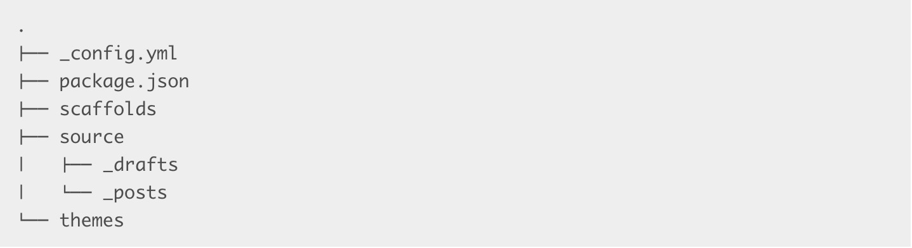
在命令里执行，本地启动项目1
hexo server
然后在浏览器里打开http://localhost:4000/，看到和下面一样的界面，说明本地已经搭建成功了。
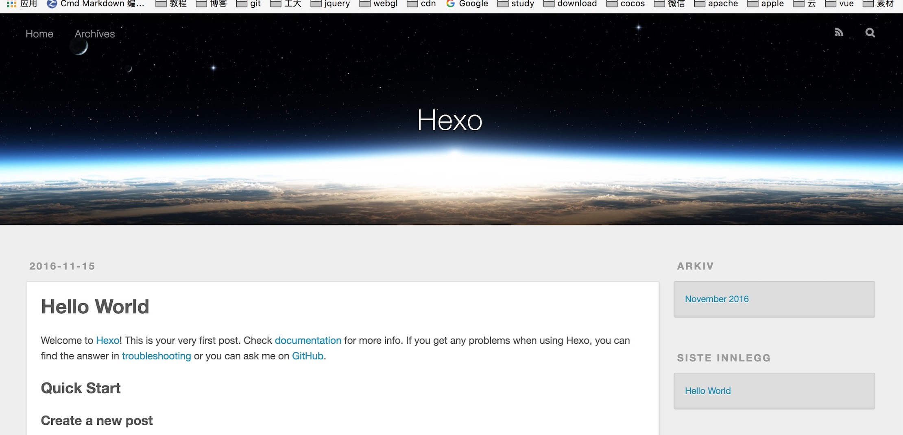
尝试修改soucre/_posts/hello-world.md文件里内容，浏览器里的内容也会随之改变。忘记了一个重点，Hexo文章是有markdown格式直接生成的。what’s markdown?，就是一种文本格式，网上教程比较多。
切换主题
看到这样的界面，你肯定感觉糟糕透了，让我们换一个主题吧。主题挑选地址。
我以一个我选择的主题为例，讲述如何安装，首先挑选一个主题，进入类似这样一个页面。
看到下面的内容，很简单，就是将主题，放在你本地的theme目录下，然后重启应用，注意git clone这个操作，应该在blog的根目录下执行。，再更改根目录下_config.yml的theme主题。
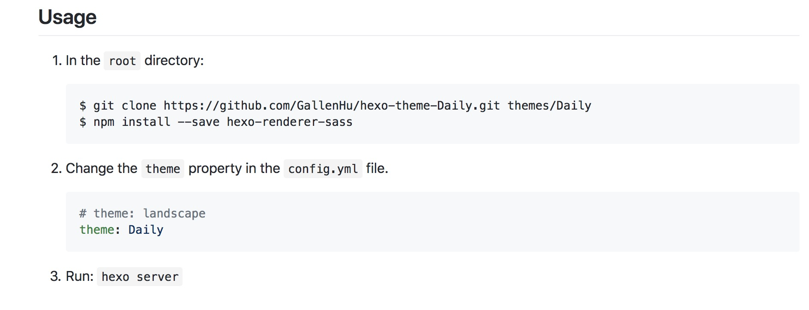
应用重启之后应该看到这样的页面，差不多符合我的审美。
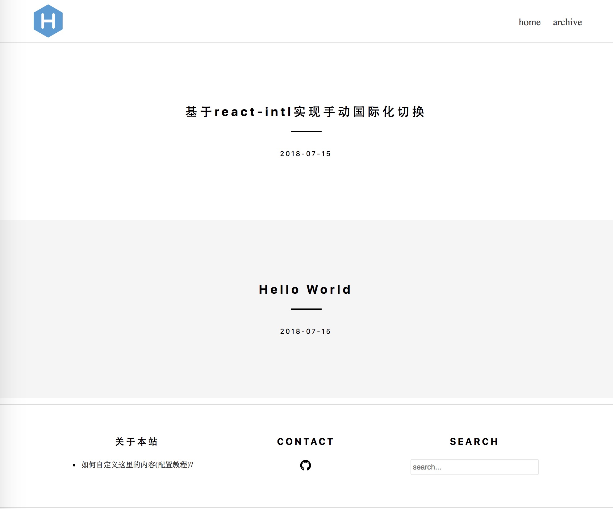
部署到远端（github）
- 注册github账号
1 | https://github.com/ |
- 创建一个repository（仓库）
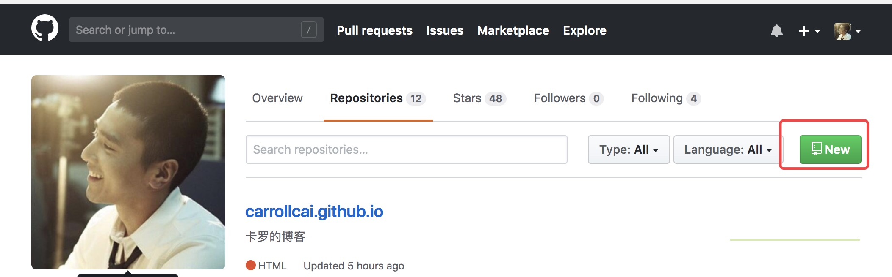
- 创建github的域名，这个域名前缀必须是你的用户名！
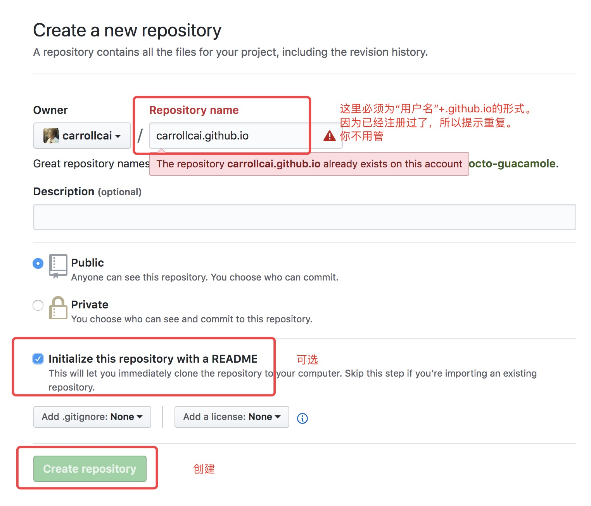
- 点击设置 创建一个page，，这里我因为我已经创建过了，直接拿别人图片做案例了
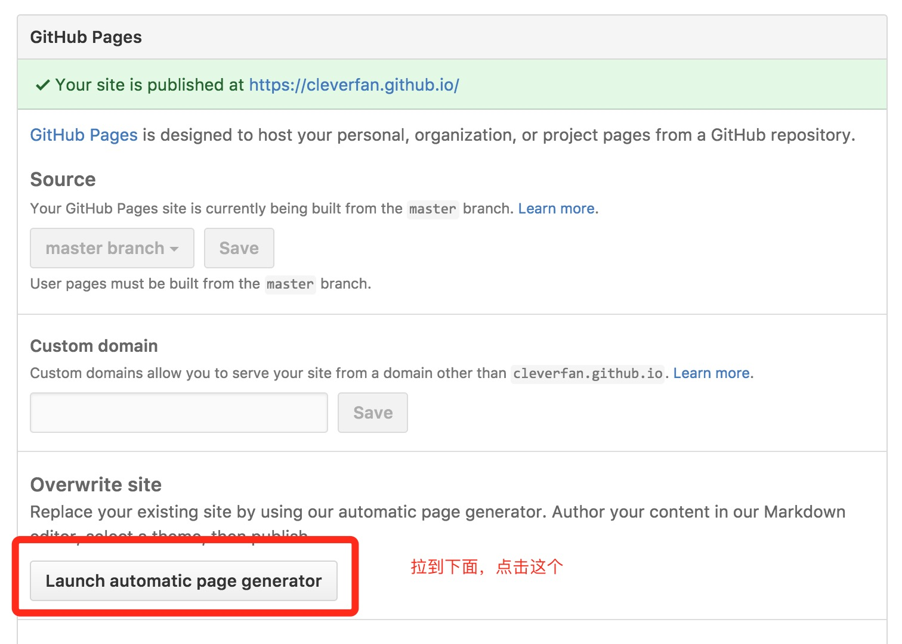
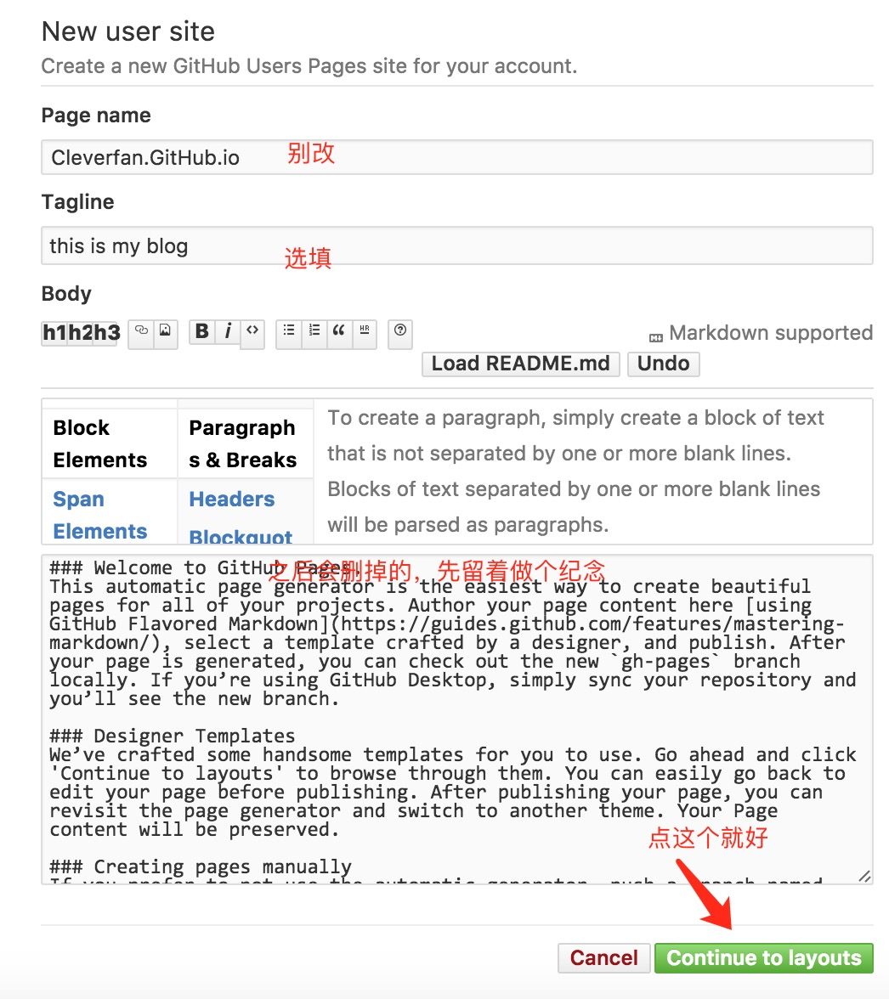
- 选择一个主题

打开github站点，你应该能看到如下效果
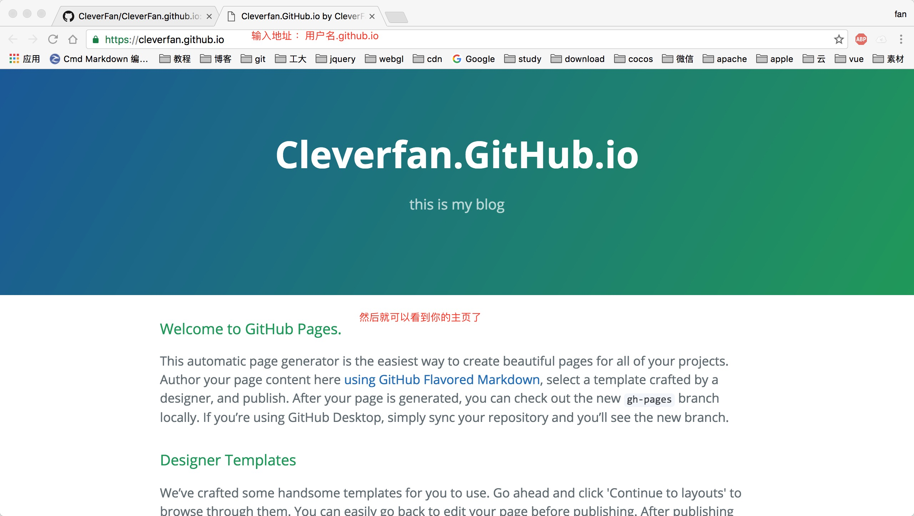
- 修改hexo站点的配置文件
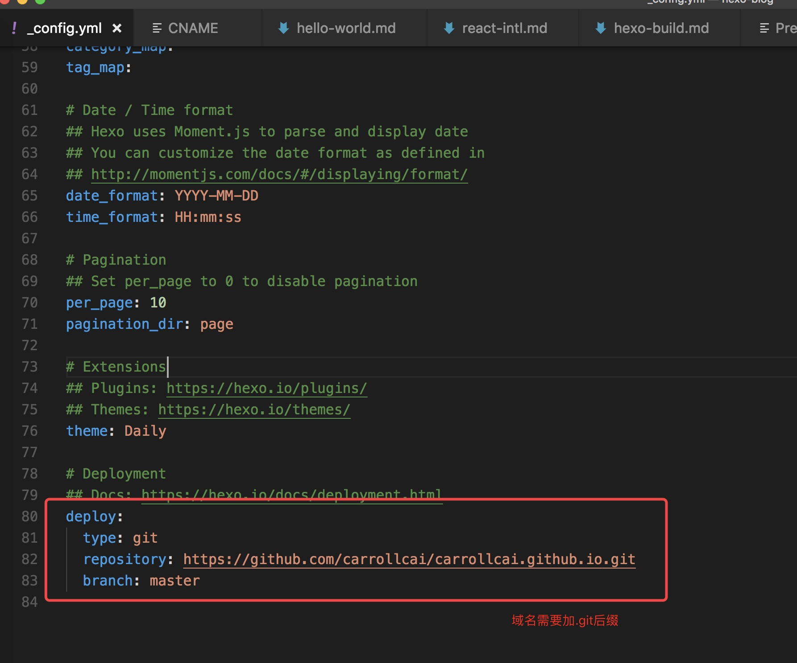
- 部署安装
1 | // 安装模板插件 |
- 访问你的网站，我的是carroll.github.io。
发布自己的博客
在根目录下输入
1 | hexo new "我的文章" |
编辑完文章之后，在根目录发布到网上
1 | hexo g //生成静态页面 |
看一下我新写的文章，完美
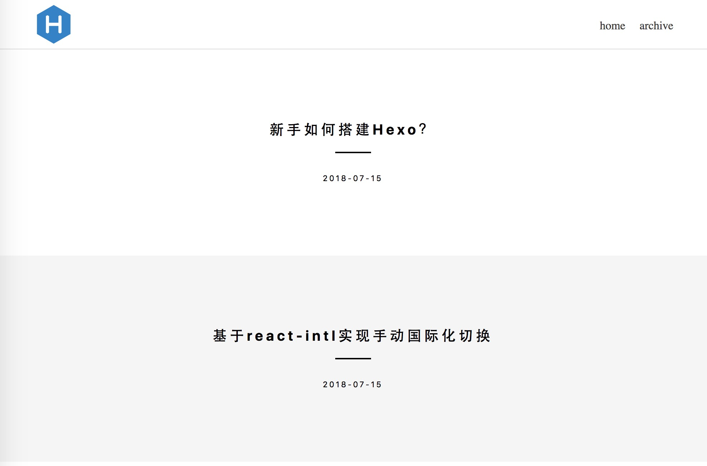